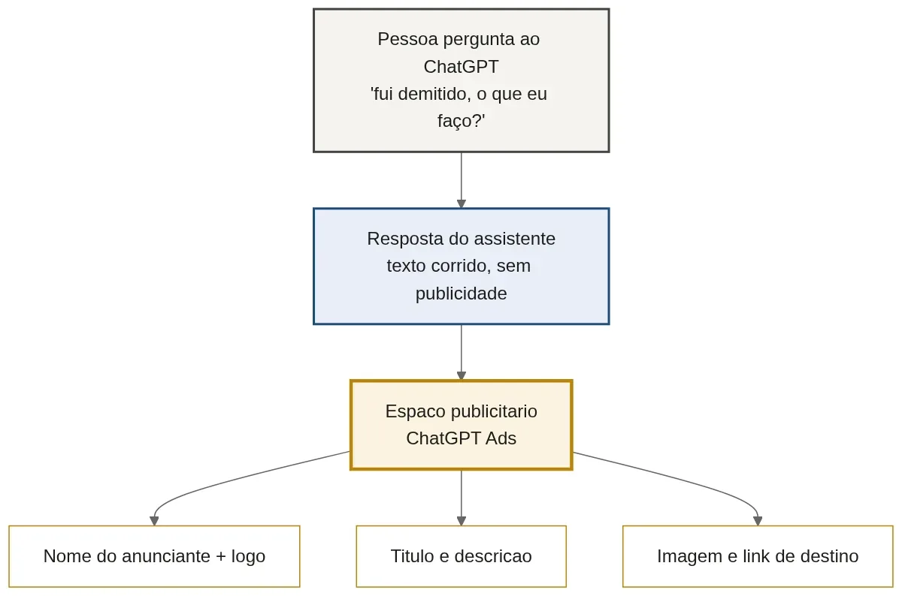
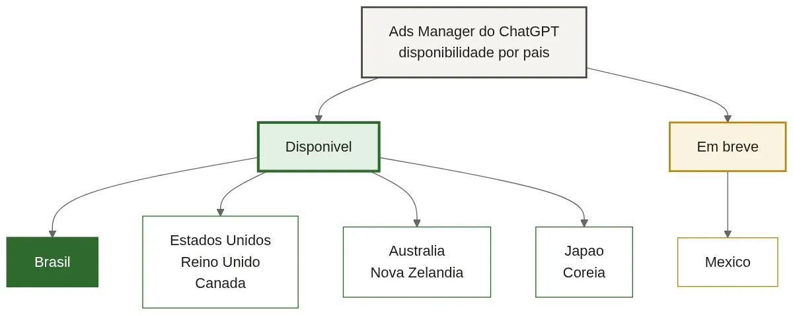
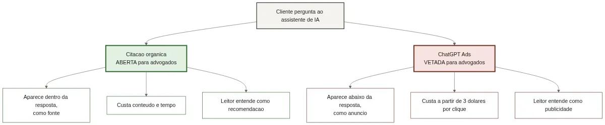
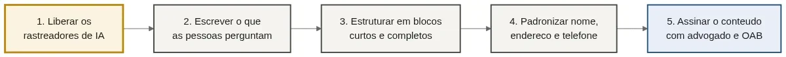

ChatGPT Ads para Advogados: O Que Muda na Captação
Alguém acaba de ser demitido sem receber as verbas rescisórias. Há dois anos, essa pessoa abriria o Google, digitaria "advogado trabalhista" e teria uma página inteira de opções para comparar. Hoje, cada vez mais gente abre o ChatGPT e pergunta: "fui demitido e não recebi minha rescisão, o que eu faço?"
A diferença entre esses dois momentos não está na tecnologia, e sim no número de escritórios que essa pessoa vai conhecer: no primeiro caso, vários; no segundo, um ou dois, se tanto. O espaço de disputa encolheu de uma página inteira para um parágrafo.
Foi logo abaixo desse parágrafo que a OpenAI começou a vender publicidade. E é aí que entra a pergunta que trouxe você até aqui: o seu escritório pode comprar esse espaço? A resposta curta é não, e por dois motivos independentes. A longa é mais interessante, porque existe um caminho aberto e gratuito que pouquíssimos escritórios estão usando.
O que muda quando a busca vira conversa
O funil de captação jurídica sempre teve formato conhecido. A pessoa pesquisava, comparava sites, lia avaliações e só então ligava para alguém. Cada etapa era uma chance de o seu escritório entrar na disputa.
O assistente de IA comprime esse funil. A pessoa descreve o problema com as próprias palavras e, quando pede indicação de profissional, vê uma ou duas referências. A comparação diminui, porque quem recebe indicação tende a segui-la. E quem não aparece na resposta simplesmente não existe naquela busca.
Nada disso é o fim do Google, que permanece o principal canal de captação jurídica no Brasil. O que está acontecendo é uma divisão do bolo: parte das buscas informativas, aquelas em que a pessoa quer entender o problema antes de contratar alguém, migrou para o assistente. É nessa fase que o escritório constrói confiança. Perdê-la significa chegar depois, quando a pessoa já decidiu o que fazer e quem procurar.
ChatGPT Ads: o que a OpenAI já confirmou
Tudo o que vem a seguir está na documentação oficial da OpenAI, conferida em agosto de 2026. O produto gerou bastante texto especulativo, e boa parte do que circula não bate com o que a empresa publicou.

O anúncio do ChatGPT Ads aparece abaixo da resposta, rotulado como patrocinado e separado do texto que o assistente escreveu. Cada unidade traz nome do anunciante, logotipo, título, descrição, imagem e link de destino.
Quem vê esses anúncios é o usuário dos planos Free e Go. Repare num detalhe que muita gente inverte: o Go é pago e ainda assim exibe publicidade. Contas Plus, Pro, Business, Enterprise e Edu não recebem anúncio, e a OpenAI também não exibe para contas identificadas como de menores de 18 anos.
Há três formas de cobrança: CPM, o custo por mil exibições; CPC, o custo por clique; e oCPC, variação do clique que prioriza quem tem mais chance de virar cliente. A escolha de qual anúncio aparece funciona como um leilão, em que o sistema não considera apenas quem ofereceu mais, mas também o quanto o anúncio combina com o assunto da conversa. A documentação sugere oferta máxima inicial de três a cinco dólares por clique, e o gasto mínimo no Brasil é de R$ 40 por dia, por campanha.
A diferença que ninguém comenta: a palavra-chave some
Quem já anuncia em busca costuma tropeçar exatamente aqui. No ChatGPT Ads não existe compra de palavra-chave com correspondência exata. O que existe são context hints, ou dicas de contexto: o anunciante descreve os assuntos em que o seu serviço faz sentido, e o sistema usa isso como um dos sinais de entrega. A documentação é explícita ao dizer que essas dicas não garantem exibição em conversas específicas. São sugestão, não ordem. Você não compra o termo "advogado trabalhista": descreve um contexto e o sistema decide onde exibir.
A segmentação por região, essa existe, ao contrário do que se diz por aí. Dá para escolher o país no nível da campanha, com recortes de estado, cidade e código postal cuja disponibilidade varia conforme o país. O detalhamento por estado e CEP aparece documentado para os Estados Unidos, e no Brasil a OpenAI orienta conferir as opções liberadas ao montar a campanha.
| No Google Ads | No ChatGPT Ads |
|---|---|
| Você compra palavras e define o quanto a busca precisa se parecer com elas | Você descreve assuntos, e o sistema decide onde exibir |
| Anúncio no topo dos resultados | Anúncio abaixo da resposta, rotulado como patrocinado |
| Vários resultados concorrendo na mesma página | Uma resposta, com poucas indicações |
| Dados de perfil e listas de público | O assunto da conversa e o uso que a pessoa faz do ChatGPT |
| Custo por clique com referência de mercado | CPM, CPC ou oCPC, sem parâmetro público por setor |
Um último ponto do ChatGPT Ads interessa a quem lida com dado sensível: o anunciante não recebe as conversas, o histórico, as memórias, o nome, o e-mail, o IP nem a localização de quem viu o anúncio. A OpenAI também bloqueia a exibição em conversas sensíveis, o que inclui saúde física e mental, política e vulnerabilidade emocional.
Por que o seu escritório não pode anunciar no ChatGPT
Quem pesquisou ChatGPT Ads para advogados nas últimas semanas provavelmente montou um plano que não vai conseguir executar.
A política de anúncios da OpenAI, na versão de 15 de julho de 2026, tem uma seção sobre serviços jurídicos. O texto diz que anúncios de consultoria jurídica, representação ou serviços jurídicos oferecidos a pessoas ou empresas não são permitidos, e cita expressamente imigração, danos pessoais, reivindicações judiciais e elaboração de documentos. Escritório de advocacia não compra espaço no ChatGPT Ads hoje, mesmo com o Ads Manager, o painel de criação de anúncios da OpenAI, já aberto no Brasil.
Existe uma abertura estreita, escrita com cautela: anúncio de educação jurídica pode ser aceito, caso a caso, desde que não haja oferta de serviço. A política cita podcast sobre Direito e material didático. Curso e conteúdo passam; captação de cliente para prestação de serviço, não.
⚠️ ATENÇÃO: Se alguém oferecer a você uma campanha de ChatGPT Ads para o seu escritório neste momento, desconfie. Existe vedação expressa na política oficial da plataforma. Campanha aprovada por engano hoje pode ser removida amanhã, e a conta do anunciante entra no radar de revisão. Guarde o dinheiro.
A contradição dentro do documento da OpenAI
O texto da política se contradiz num ponto, e isso indica o futuro. Num parágrafo, a empresa afirma que pode aprovar anunciantes de serviços financeiros, de saúde e jurídicos, caso a caso e com revisão manual, descrevendo isso como liberação gradual. No parágrafo seguinte, lista serviços financeiros e jurídicos entre as categorias proibidas no lançamento. A leitura razoável é que a vedação vale como regra hoje, e que a porta caso a caso existe no papel para quando a plataforma amadurecer os controles. Nenhum escritório deveria montar orçamento em cima dessa possibilidade.
O Brasil está liberado, e isso importa

A limitação não é geográfica. O Ads Manager lista o Brasil como disponível, ao lado de países como Estados Unidos, Reino Unido, Canadá, Austrália, Japão, Coreia do Sul e Nova Zelândia. Empresas brasileiras de outras categorias já anunciam: a barreira do escritório de advocacia é de categoria, e categoria é o tipo de regra que muda com o tempo.
A segunda barreira: a OAB veda antes da OpenAI
Suponha que a OpenAI libere a categoria jurídica amanhã. O escritório brasileiro ainda não poderá anunciar, porque a segunda barreira não é da plataforma: é da OAB, e já existia antes de tudo isso.
O Provimento 205/2021 do Conselho Federal não usa a expressão inteligência artificial, mas está longe de ser omisso sobre tecnologia. O Anexo Único traz verbetes para chatbot, ferramentas tecnológicas e aplicativos que respondem consultas jurídicas. Dois deles decidem a questão.
O primeiro trata de patrocínio e impulsionamento em redes sociais: permitido, desde que não se trate de publicidade contendo oferta de serviços jurídicos. Anúncio pago que oferece serviço advocatício está vedado em qualquer plataforma.
O segundo é ainda mais preciso. O verbete sobre aquisição de palavra-chave, que cita o Google Ads pelo nome, permite a ferramenta quando responsivo a uma busca iniciada pelo potencial cliente. O Google Ads passa porque a pessoa digitou o termo e pediu aquilo. O ChatGPT Ads entrega por contexto de conversa, sem que ninguém tenha buscado por advogado.
💡 DICA VALIOSA: Guarde essa distinção, porque ela vale para qualquer canal novo. A OAB separa a publicidade que responde a quem procurou daquela que aborda quem não pediu nada. Sempre que surgir uma mídia nova, a pergunta não é "a plataforma deixa?", e sim "o cliente iniciou essa conversa?".
O Anexo Único também é claro sobre criação de conteúdo, palestras e artigos: devem ter caráter técnico informativo, sem divulgação de resultados concretos, clientes ou valores. A mesma norma que fecha a porta do anúncio deixa a do conteúdo escancarada. Para a análise completa do que o Provimento autoriza, já publicamos o guia sobre o que a OAB permite em tráfego pago.
As duas formas de aparecer: citado ou pago
Resolvido o que não dá para fazer, sobra o caminho que a maioria dos escritórios ainda não explorou, e ele é gratuito.

A primeira via é a citação orgânica: o assistente leu o seu conteúdo, considerou aquilo útil e mencionou o seu escritório como referência. Depende de ter conteúdo que responda a perguntas reais, de o site ser legível pelos robôs de IA e de a marca aparecer de forma consistente na internet. A segunda é o anúncio pago, que é o ChatGPT Ads.
| Critério | Citação orgânica | ChatGPT Ads |
|---|---|---|
| Disponível para advogado hoje | Sim | Não, vetado pela OpenAI e pela OAB |
| Custo | Tempo e conteúdo | Mínimo de R$ 40 por dia, por campanha |
| Onde aparece | Dentro da resposta, como fonte | Abaixo da resposta, como anúncio |
| Percepção do leitor | Recomendação | Publicidade |
| O que exige | Conteúdo útil e site legível por IA | Verba, conta aprovada e permissão da OAB |
Note a linha da percepção. Ser citado no corpo da resposta carrega um peso que anúncio nenhum compra, porque o leitor entende aquilo como recomendação. Para uma decisão de confiança como escolher advogado, a diferença é enorme.
O resultado é irônico: o caminho fechado para o seu escritório é o menos valioso dos dois. É esse outro trabalho que a JuriDigital vem fazendo nos escritórios que decidiram se antecipar, liberando o site para os robôs de IA e produzindo o conteúdo que eles citam. Para saber onde o seu está hoje, comece por uma conversa com a nossa equipe.
Seu site está bloqueando o ChatGPT sem você saber?
Para citar o seu escritório, o assistente precisa ter lido o seu site. E muitos sites jurídicos bloqueiam os robôs de inteligência artificial sem que o dono tenha a menor ideia disso. É o problema mais comum que encontramos, e também o mais fácil de resolver.
Um rastreador, ou robô, é um programa automático que percorre sites lendo o que está publicado, o mesmo tipo que o Google usa há décadas para montar os resultados de busca. As empresas de IA têm os seus, e é por eles que o seu conteúdo entra ou não no repertório do assistente.
O bloqueio raramente é decisão consciente. Aparece por três caminhos: uma regra no robots.txt, arquivo de texto que existe em todo site e funciona como um recado na porta para os robôs; um plugin de segurança do WordPress com bloqueio ligado por padrão; ou o firewall da hospedagem, que trata o robô de IA como visitante suspeito porque ele não navega igual a uma pessoa. O resultado é o mesmo nos três: o site funciona para pessoas, aparece no Google e permanece invisível para a IA.
Os quatro robôs da OpenAI, e qual deles decide
A OpenAI opera quatro robôs com funções distintas:
- OAI-SearchBot alimenta a busca do ChatGPT, aquela que exibe links e cita fontes. É o que decide se você aparece.
- GPTBot recolhe conteúdo público para ensinar as futuras versões da IA.
- ChatGPT-User acessa uma página quando alguém pede algo específico na conversa.
- OAI-AdsBot visita apenas páginas enviadas como anúncio, para conferir se cumprem a política.
Quem quer ser encontrado precisa liberar o OAI-SearchBot, e esse é o ponto que quase todo tutorial erra. A própria OpenAI avisa que o ChatGPT-User não define se o conteúdo aparece na busca, e que as regras do robots.txt podem nem se aplicar a ele: nesse caso o que importa é não estar barrado no firewall. Bloquear só o GPTBot não atrapalha a citação, e é escolha defensável para quem não quer ceder conteúdo ao treinamento.
✅ CHECKLIST DE VERIFICAÇÃO: Abra
seusite.com.br/robots.txtno navegador. Se aparecerUser-agent: OAI-SearchBotseguido deDisallow: /, a tradução é "OAI-SearchBot, não leia nada aqui", porque a barra sozinha significa o site inteiro. Depois confira o plugin de segurança e o firewall da hospedagem, em que a trava costuma estar ligada sem aviso. Por fim, pergunte ao próprio ChatGPT sobre a sua área de atuação na sua cidade e veja se o seu site aparece entre as fontes.
O último item é revelador. Muitos escritórios descobrem ali que o concorrente com metade do faturamento aparece na resposta, e eles não. Se a verificação deixar você com mais dúvidas do que respostas, esse é o tipo de diagnóstico que fazemos no marketing jurídico da JuriDigital, olhando site, conteúdo e infraestrutura na mesma passada.
Vale a pena esperar a liberação para anunciar?
Para a maioria dos escritórios, a pergunta está errada. Mesmo que a OpenAI libere a categoria, a vedação da OAB continua de pé para qualquer anúncio que ofereça serviço jurídico.
E o ChatGPT Ads segue em fase de teste, sem parâmetro público de custo por setor e com entrega por contexto de conversa, imprecisa para uma área em que especialidade e proximidade definem tudo. O dinheiro rende mais em tráfego pago no Google, no qual a intenção de busca é explícita e a OAB já reconheceu o formato. Aparecer organicamente leva meses e não pode ser comprado com pressa no dia em que o canal abrir; um anúncio sobe em poucos dias. A ordem sensata é começar agora pelo que demora.
O que fazer agora, sem gastar nada

Cinco ações concretas, em ordem de prioridade, para ocupar espaço enquanto a concorrência espera uma liberação que talvez não venha.
Libere os robôs de IA. É o único dos cinco passos que não é você quem executa. Mande para quem cuida do seu site com estas palavras: libere o acesso do OAI-SearchBot no robots.txt e no plugin de segurança, e confira se o firewall da hospedagem não está barrando os robôs da OpenAI. Sem isso, os outros quatro não produzem efeito.
Escreva o que as pessoas perguntam, do jeito que perguntam. "Fui demitido e não recebi a rescisão, o que fazer" funciona melhor que "verbas rescisórias: aspectos gerais". Use a pergunta como título e responda nos primeiros parágrafos.
Estruture a resposta em blocos curtos e completos. O assistente extrai trechos, não páginas. Um parágrafo que responde a pergunta inteira sem depender do contexto anterior tem muito mais chance de virar citação.
Mantenha nome, endereço e telefone idênticos em todo lugar. Site, Google Empresarial, redes sociais e diretórios jurídicos. Quando os dados batem, o assistente confia; quando não batem, ele não indica. Vale tanto para IA quanto para o SEO local para advogados.
Deixe claro quem assina o conteúdo. Nome do advogado, número de inscrição e área de atuação. O assistente dá mais valor a texto assinado por alguém que ele consegue verificar. Uma cautela: o Provimento veda anunciar especialidade sem título ou notória especialização.
O ponto de partida está no seu WhatsApp. Liste as cinco perguntas que a sua equipe mais respondeu esta semana: são as mesmas que o seu cliente faria a um assistente de IA.
Perguntas frequentes sobre ChatGPT Ads para advogados
Advogado pode anunciar no ChatGPT?
Não, e por dois motivos independentes. A política da OpenAI veta anúncios de consultoria jurídica, representação e serviços jurídicos. E o Provimento 205/2021 da OAB proíbe publicidade paga com oferta de serviços jurídicos em qualquer plataforma. Mesmo que a OpenAI libere a categoria, a regra da OAB continua valendo.
Qual a diferença entre aparecer no ChatGPT e anunciar no ChatGPT?
Aparecer é ser citado dentro da resposta, como fonte que o assistente considerou útil, e não custa mídia. Anunciar é comprar espaço abaixo da resposta, com identificação de publicidade. Hoje só o primeiro caminho está aberto para escritórios.
Como sei se meu site está sendo lido pelo ChatGPT?
Acesse seusite.com.br/robots.txt e verifique se há bloqueio ao OAI-SearchBot, o robô que define se o conteúdo aparece nas respostas com fontes. Confira também o plugin de segurança e o firewall da hospedagem. Por fim, pergunte ao ChatGPT sobre a sua área e cidade e veja se o seu site aparece entre as fontes.
Anunciar em IA substitui o Google Ads?
Não substitui, nem deveria. O Google permanece o principal canal de captação jurídica no Brasil, com intenção de busca explícita e formato já reconhecido pela OAB. O ChatGPT Ads está em fase de teste e entrega por contexto de conversa.
O Provimento 205 da OAB se aplica a anúncio em inteligência artificial?
Sim, por analogia direta. O Anexo Único regula chatbot, ferramentas tecnológicas e compra de palavra-chave, esta última permitida apenas quando o anúncio responde a uma busca iniciada pelo potencial cliente. Como o ChatGPT Ads entrega por contexto, o enquadramento fica mais restritivo.
Quanto custa anunciar no ChatGPT?
A cobrança é por mil exibições, por clique ou por clique otimizado para conversão. A documentação sugere oferta máxima inicial de três a cinco dólares por clique, e o gasto mínimo no Brasil é de R$ 40 por dia, por campanha.
O que fazer com um canal que você não pode usar
O quadro é este: o ChatGPT Ads existe, já aceita anunciantes no Brasil e está fechado para advocacia por duas portas, a política da OpenAI e o Provimento 205 da OAB. A segunda é a que menos muda.
O que sobra é melhor do que o que faltou. A citação orgânica está aberta, custa conteúdo em vez de mídia e carrega peso de recomendação, e a disputa por esse espaço ainda é rarefeita no mercado jurídico.
O primeiro movimento cabe nesta semana e não custa nada: abra o robots.txt do seu site e confirme se o OAI-SearchBot está liberado. Depois comece a transformar as dúvidas do WhatsApp em conteúdo, uma por vez.
Do sexto passo em diante, o trabalho exige método. É aí que a JuriDigital entra: cuidamos do diagnóstico do site, da produção do conteúdo que a IA cita e da presença do seu escritório nos canais que trazem cliente. Fale com a nossa equipe e comece pelo trabalho que já está liberado.